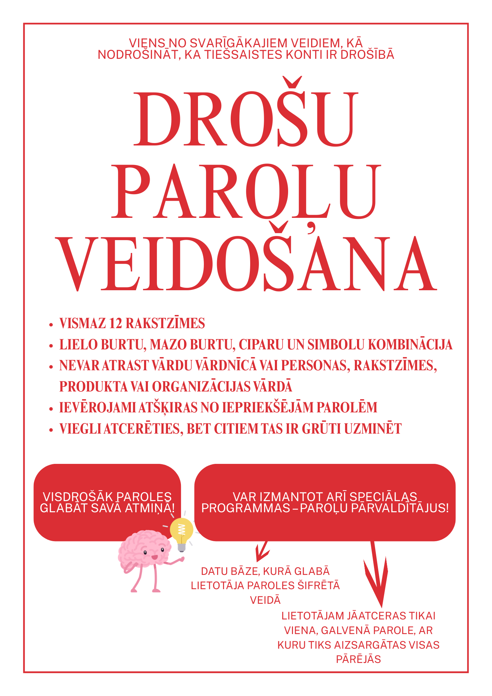

Viens no svarīgākajiem veidiem, kā nodrošināt, ka tiešsaistes konti ir drošībā, ir paroļu aizsardzība. Paroles drošība sākas ar stipras paroles izveidošanu. Par stipru paroli tiek uzskatīta parole ar tālāk aprakstītajām īpašībām.
Visdrošāk paroles glabāt savā atmiņā. Tomēr mūsdienās, kad cilvēkam ir jāatceras tik daudz paroļu, katram individuāli ir izveidojusies savi paroļu veidošanas un glabāšanas paradumi.
Ja nevarat atcerēties un Jums ērtāk visas paroles sarakstīt un glabāt vienā vietā, tad izvēlieties drošu vietu savās mājās, kur tās noglabāsiet. Ļoti iespējams piemērota būs vieta, kur glabājat citus ļoti svarīgus dokumentus. Nēsāt līdzi šo informāciju gan nevajadzētu.
Paroļu glabāšanai var izmantot arī speciālas programmas – paroļu pārvaldītājus. Programma izveido datu bāzi, kurā glabā lietotāja paroles šifrētā veidā. Lietotājam jāatceras tikai viena, galvenā parole, ar kuru tiks aizsargātas visas pārējās. Tas ļauj lietotājam paroles biežāk mainīt un veidot sarežģītākas, grūtāk uzminamas un grūtāk uzlaužamas, jo tās vairs nav nepieciešams atcerēties. Tomēr, paturiet prātā, ka šādā gadījumā, ja kāds uzminēs vai uzlauzīs šo vienu paroļu programmas paroli, tad viņam būs pieejamas pilnīgi visas jūsu pārējās paroles.
Izmantotir resursi